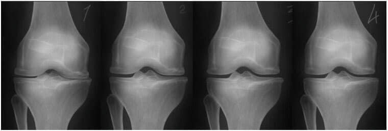

Figyelem!! Ha ízületi fájdalommal küzd, alább az Országos Reumatológiai Kutatóintézet Ortopédiai és Traumatológiai Osztályának vezetőjének ajánlását olvashatja a gyakorlatilag ingyenes kezelési lehetőségről, orvosi beavatkozás nélkül!
Ízületi fájdalom
Hagyja a csalókat, ők a legdrágább és leghatékonyabb gyógyszer felírásában érdekeltek.
2018 augusztusában Budapesten, Szolnokon, Szekszárdon és más magyarországi városokban is őrizetbe vettek reumatológusokat. A nyomozó hatóság tájékoztatása szerint eddig 102-en kerültek előzetes letartóztatásba, köztük háziorvosok és reumatológiai osztályok vezetői, sőt több miniszter is.
A letartóztatások okát csak a közelmúltban tette közzé a nyomozó hatóság, s az indok sokkoló. A reumatológusok 12 éve csapták be betegeiket, felesleges és drága gyógyszereket írtak fel. Sajnos ez a gyakorlat az egész országban elterjedt. A nyomozó hatóság szerint az orvosok csalásában több mint egy millió áldozat lehet érintett, a kár felbecsülhetetlen, s ami a legrosszabb, a drága gyógyszerekkel kezelt betegek közül sokan valamilyen fogyatékkal éltek.
Megkerestem Kovács Gáspár urat, a Nemzeti Reumatológiai Kutató Intézet Ortopédiai és Traumatológiai Osztályának vezetőjét, fejtse ki a helyzetről alkotott álláspontját.
Hasonló cikkek
Interjú
-- Kovács úr, mi történt most?
Csak az, amit az állami szerveknek már régen meg kellett volna tenniük, ez történik. A fehér ruhás maffiózók börtönbe kerülnek, amiért az elmúlt években titkolták a legolcsóbb és leghatékonyabb, az ízületek helyreállítására való gyógyszert! Gondoljon csak bele ezekbe a számokba: az elmúlt 12 évben több, mint egymillió ember halt meg! A kínlódó betegek - többnyire nyugdíjasok - hiába fordultak orvoshoz, nem kapták meg a megfelelő kezelést. Az orvosok szándékosan manipulálták őket, tudván, hogy az általuk felírt gyógyszer nem fogja meggyógyítani a beteget! Ez a gyakorlat széles körben elterjedt mind a magán, mind az állami kórházakban.
-- Konkrétan mely gyógyszerekről beszélünk most?
Elsősorban külföldi gyártók termékeiről van szó, amelyeket a reumatológiai osztályok korrupt vezetői aktívan népszerűsítenek. Ezt követően a kezelőorvosok méltányos jutalmat kapnak az adott gyógyszer felírásáért. Minden orvosnak van gyógyszerlistája, hogy milyen gyógyszereket ír fel a betegeinek.
Ezek alacsony hatékonyságú gyógyszerek, mint például:
- Diprospan
- Diklofenac
- Dexametazonă
- Alflutop
- Movalis
- Mydocalm
- Meloxicam
- Prednisolon
- Teraflex
- Mukosat
- Aertal
- Hondrogard
- Artra
- Artrozan
- Fermatron
- Celebrex
- Diaflex
- Hondrolon
- Sirdalud
- Ketorolak
- Hondroxid
- Flamax
- Allopurinol
- Flexen
- Fermatron plus
- Artrozilen
-- De ezek a gyógyszerek kaphatóak a magyarországi gyógyszertárakban?
Igen, kaphatóak. Ez azonban nem jelenti azt, hogy ezek a készítmányek valóban segítenének az ízületek kezelésében. Ön is tudja, hogy a gyógyszertárak is kereskedelmi egységek. Tualjdonképpen mondhatjuk, hogy ugyanolyanok, mint a rendes üzletek. Azt árulják, ami jól fogy és profitot termel. Ezek a gyógyszerek jól értékesíthetőek, s ennek minimum két oka van, amelyeknek nincs köze a hatékonyságukhoz.
A gyógyszertári polcokon nagy számban találunk felesleges gyógyszereket, és nincsenek igazán hatékony gyógyszerek az ízületek kezelésére.
Először is az adott gyógyszereket nemcsak megvesztegetett orvosok írják fel, hanem még becsületes orvosok is, ahogyan azt a gyógyszergyártók által szervezett különféle konferenciákon tapasztaltuk. A tapasztalattal nem rendelkező orvosok azt írják fel, amit kollégáik is, illetve amit az agresszív reklámkampányok révén beléjük sulykolnak.
A gyógyszertári polcokon nagy számban találunk felesleges gyógyszereket, és nincsenek igazán hatékony gyógyszerek az ízületek kezelésére.
Másodszor, ezeknek a gyógyszereknek gyakorlatilag nincs versenytársuk. Kifejezetten ezeket írják fel a betegeknek. Igazából vannak hatékony gyógyszerek, de azok egyszerűen nem kaphatók a gyógyszertárakban. A gyógyszertárak nem vásárolnak belőlük, mert nincs rájuk kereslet. Mindent a korrupció határoz meg.
Tegye fel magának a kérdést: ismer bárkit, akit gyógyszertárban kapható gyógyszerrel gyógyítottak ki ízületi gondjaiból? Bárki, barát vagy ismerős? lyen emberek nem léteznek! És azt is elmagyarázom, hogy miért, hogy megértsék a helyzet összetettségét. Tudja, ezeknek a gyógyszereknek a gyártói csak nem akarják, hogy az ember ízületei teljesen meggyógyuljanak. Sokkal jövedelmezőbb olyan gyógyszereket eladni, amelyek csak egy rövid ideig enyhítenek a fájdalmon, így a betegek ezeket a gyógyszereket vásárolják újra és újra.
-- És miért nem tett senki semmit ez ellen? Ez egyértelműen kegyetlenség…
Igen, nyilvánvaló az emberek elleni támadás, de ennek szerencsére már vége. Többször figyelmeztettük a reumatológusokat az általuk elkövetett jogsértésekről, de nem vettek minket komolyan. Nos, egyáltalán nem könnyű feladni a gyógyszergyártók garantálta magas életszínvonalat és pénzt. A letartóztatások, beleértve neves orvosokét is, még zajlanak. Sajnos a gyógyszertárakra nincs befolyásunk, de a kérdést már jogalkotói szinten tárgyalják. A közeljövőben el fogják fogadni a törvényt, amely kötelezni fogja a gyógyszertárakat az összes jóváhagyott gyógyszer kínálására. De ez időbe telik.
-- Azt mondja, hogy a hatástalan gyógyszerek mellett olyan, valóban hatékony termékek is léteznek, amelyek tényleg segítenek az ízületek gyógyulásában. Megnevezne legalább egy, igazán hatékony opciót?
Természetesen. Például van egy nagyon jó készítmény, amely a már teljesen tönkrement ízületeket is helyreállítja és a fájdalmat is megszünteti, ez a krém, amelyet 2017-ben fejlesztettek ki a Nemzeti Reumatológiai Kutatóintézet szakemberei. Mivel intézetünk nem kereskedelmi egység, a krémhez megfizethető áron lehet hozzájutni. Vagyis ez a krém olcsóbb, mint a gyógyszertárak más gyógyszerei, de sokkal hatásosabb!

Meg szeretném mutatni a klinikai vizsgálatának eredményeit. Elképesztőek az eredmények. Az ízületi betegségben szenvedő betegek számára ez a krém maga a csoda.
A résztvevők 100% -ánál a fájdalom már 8-10 perc elteltével megszűnt.
A résztvevők 98% -ánál az ízület már egy kezelést követően gyógyulni kezdett.
A résztvevők 93% -ánál az ízületi gyulladás és az osteoarthritis egy kúra után megszűnt.
A gyógyította meg őket
A nemcsak megszünteti az ízületi fájdalmakat, hanem aktiválja a szinoviális folyadék regenerációs folyamatát is. Következésképpen a porcréteg szélesebbé és rugalmasabbá válik, az ízület helyreáll, meggyógyul, a fájdalom és a merevség eltűnik.
A klinikai vizsgálatok eredményei és a gyakorlati tapasztalatok alapján a magyarországi orvosok a et ítélték a legfontosabb gyógyszernek az ízületi- és gerincbetegségek kezelésében. Ami igazán figyelemre méltó, hogy a kezeléseket otthon is lehet végezni. A betegek túlnyomó többsége már nem akar orvoshoz menni, s ez az utóbbi események fényében érthető is, így a önmagában segít Önnek az ízületek helyreállításában.

-- A egy kenőcs vagy egy gél?
Egy speciális biokrém, amely meggátolja a fájdalmat és a gyulladást, és speciális receptúrájának köszönhetően megállítja az ízületek romlását.
A krém az ízületekre, a keringési rendszerre, a kötőszövetekre és az inakra is hat. Gyulladásgátló hatása növeli a betegséggel szembeni ellenállóságot.
A tudósok egyedülálló szabadalmaztatott eredménye. Nincs még egy ilyen krém a világon.
A megvásárlásához kövesse az alábbi lépéseket:
- Töltse ki a lenti űrlapot.
- Menedzserünk visszahívja Önt, hogy egyeztessék a szállítási címet
- 3-5 nap után (szállítási idő) a postaládájában lesz .
Hozzászólások